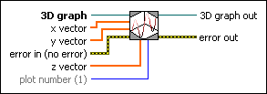

3D Curve VI
Owning Palette: 3D Graph Properties VIs
Requires: Base Development System (Windows)
Describes a line in terms of x, y, and z points. This VI has three 1D array or vector inputs that specify each point in the plot.

 Add to the block diagram Add to the block diagram |
 Find on the palette Find on the palette |